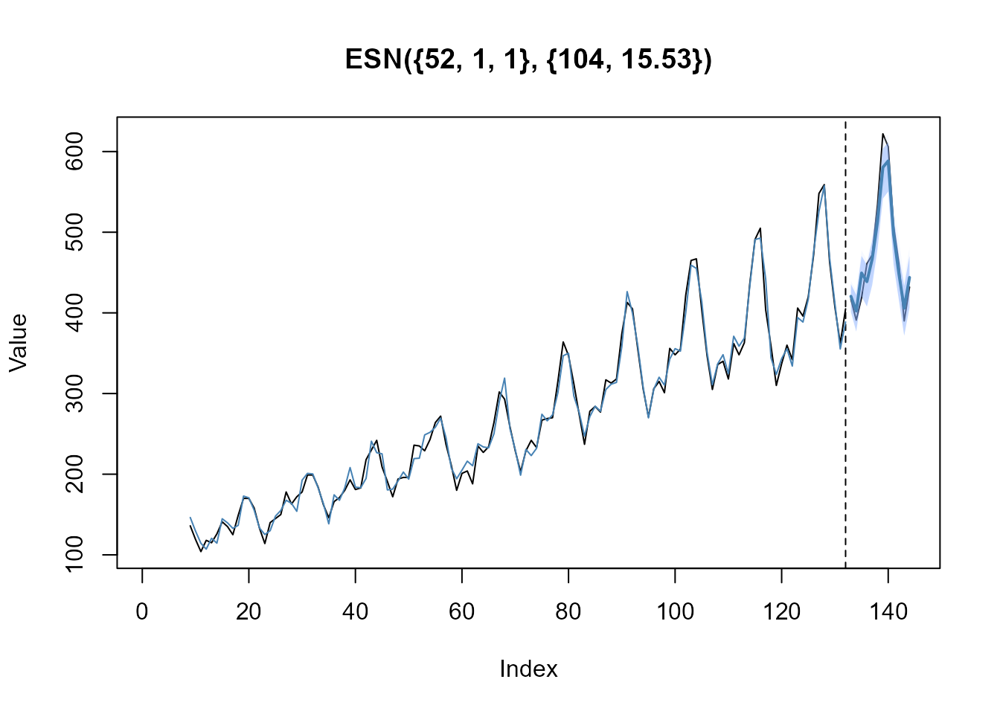

Prepare dataset
In a first example, we want to model the well-known
AirPassenger time series (ts object). The
dataset contains monthly totals of international airline passengers (in
thousands) from January 1949 to December 1960 with 144 observations in
total. The first 132 observations are used for model training
(n_train) and last 12 observations are used for testing
(n_ahead). xtrain and xtest are
numeric vectors containing the training and testing data.
# Forecast horizon
n_ahead <- 12
# Number of observations (total)
n_obs <- length(AirPassengers)
# Number of observations (training data)
n_train <- n_obs - n_ahead
# Prepare train and test data as numeric vectors
xtrain <- AirPassengers[(1:n_train)]
xtest <- AirPassengers[((n_train+1):n_obs)]
xtrain
#> [1] 112 118 132 129 121 135 148 148 136 119 104 118 115 126 141 135 125 149
#> [19] 170 170 158 133 114 140 145 150 178 163 172 178 199 199 184 162 146 166
#> [37] 171 180 193 181 183 218 230 242 209 191 172 194 196 196 236 235 229 243
#> [55] 264 272 237 211 180 201 204 188 235 227 234 264 302 293 259 229 203 229
#> [73] 242 233 267 269 270 315 364 347 312 274 237 278 284 277 317 313 318 374
#> [91] 413 405 355 306 271 306 315 301 356 348 355 422 465 467 404 347 305 336
#> [109] 340 318 362 348 363 435 491 505 404 359 310 337 360 342 406 396 420 472
#> [127] 548 559 463 407 362 405
xtest
#> [1] 417 391 419 461 472 535 622 606 508 461 390 432Train ESN model
The function train_esn() is used to automatically train
an ESN to the input data xtrain, where the output
xmodel is an object of class esn. The object
xmodel is a list containing the actual and
fitted values, residuals, the internal states
states_train, estimated coefficients from the ridge
regression estimation, hyperparameters, etc. We can summarize the model
by using the generic S3 method summary() to get detailed
information on the trained model.
# Train ESN model
xmodel <- train_esn(y = xtrain)
# Plot actual and fitted values
plot(xmodel$actual, type = "l")
lines(xmodel$fitted, col = "steelblue", lwd = 2)
# Summarize model
summary(xmodel)
#>
#> --- Inputs -----------------------------------------------------
#> n_obs = 132
#> n_diff = 1
#> lags = 1
#>
#> --- Reservoir generation ---------------------------------------
#> n_states = 52
#> alpha = 1
#> rho = 1
#> density = 0.5
#> scale_inputs = [-0.5, 0.5]
#> scale_win = [-0.5, 0.5]
#> scale_wres = [-0.5, 0.5]
#>
#> --- Model selection --------------------------------------------
#> n_models = 104
#> df = 18.61
#> lambda = 0.008From the output above, we get the following information about the trained ESN model:
| Value | Description |
|---|---|
n_obs |
Number of observations (i.e., length of the input time series) |
n_diff |
Number of differences required to achieve (weak-) stationarity of the input training data |
lags |
Lags of the output variable (response), which are used as model input |
n_states |
Number of internal states (i.e., predictor variables or reservoir size). |
alpha |
Leakage rate (smoothing parameter) |
rho |
Spectral radius for scaling the reservoir weight matrix |
density |
Density of the reservoir weight matrix |
scale_inputs |
Input training data are scaled to the interval
(-0.5, 0.5)
|
scale_win |
Input weights matrix is drawn from a random uniform
distribution with interval (-0.5, 0.5)
|
scale_wres |
Reservoir weight matrix is drawn from a random uniform
distribution with interval (-0.5, 0.5)
|
n_models |
Number of models evaluated during the random search
optimization to find the regularization parameter
lambda
|
df |
Effective degrees of freedom in the model |
lambda |
Regularization parameter for the ridge regression estimation |
Forecast ESN model
The function forecast_esn() is used to forecast the
trained model xmodel for n_ahead steps into
the future. The output xfcst is a list of class
forecast_esn containing the point forecasts,
actual and fitted values, the forecast horizon
n_ahead and the model specification
model_spec. We can use the generic S3 method
plot() to visualize the point forecast within
xfcst and add the holdout test data xtest.
# Forecast ESN model
xfcst <- forecast_esn(xmodel, n_ahead = n_ahead)
xfcst
#> $point
#> [1] 417.1882 394.6582 442.8875 432.9793 466.5263 522.0339 594.8509 601.8089
#> [9] 501.4787 445.6808 400.5648 438.0486
#>
#> $actual
#> [1] NA NA NA NA NA NA NA NA 136 119 104 118 115 126 141 135 125 149
#> [19] 170 170 158 133 114 140 145 150 178 163 172 178 199 199 184 162 146 166
#> [37] 171 180 193 181 183 218 230 242 209 191 172 194 196 196 236 235 229 243
#> [55] 264 272 237 211 180 201 204 188 235 227 234 264 302 293 259 229 203 229
#> [73] 242 233 267 269 270 315 364 347 312 274 237 278 284 277 317 313 318 374
#> [91] 413 405 355 306 271 306 315 301 356 348 355 422 465 467 404 347 305 336
#> [109] 340 318 362 348 363 435 491 505 404 359 310 337 360 342 406 396 420 472
#> [127] 548 559 463 407 362 405
#>
#> $fitted
#> [1] NA NA NA NA NA NA NA NA
#> [9] 145.7164 127.3081 112.9902 107.0054 118.1469 115.5302 142.5219 138.9433
#> [17] 129.7828 137.3497 172.5977 173.7693 155.8541 132.5665 124.1381 129.5666
#> [25] 144.8099 155.8602 170.5424 162.8141 155.4332 191.6271 204.9483 197.0546
#> [33] 182.6689 163.4202 140.9553 175.9001 168.9458 179.7858 208.1735 184.3650
#> [41] 183.8114 198.8734 241.8025 230.0927 218.7145 180.2839 176.2637 195.8239
#> [49] 203.9867 197.7465 221.0399 216.4082 246.2847 254.5426 258.8691 268.9379
#> [57] 247.7433 210.3665 194.9113 205.2524 212.9219 207.5823 242.1780 234.1873
#> [65] 237.4439 253.0441 290.5464 315.0828 254.9987 224.3264 200.0762 234.5009
#> [73] 226.7226 228.5192 275.3030 262.7540 269.5059 305.0020 350.6129 352.7342
#> [81] 297.1616 273.0064 244.0305 269.6008 281.1636 279.6552 310.1817 313.0442
#> [89] 313.4519 359.4934 425.4337 400.7056 354.8856 310.7771 271.7869 307.7336
#> [97] 318.1456 306.4374 342.0817 352.6253 356.3302 406.1027 462.7193 455.0442
#> [105] 408.8471 348.9001 308.4295 338.2909 349.0748 325.6744 374.0811 357.6986
#> [113] 367.5063 435.6384 494.8804 493.7509 438.1065 346.7945 317.9420 343.7900
#> [121] 351.9400 328.7802 394.5666 387.2260 417.2922 480.4603 531.8839 554.0935
#> [129] 465.7218 409.5529 355.9789 386.6106
#>
#> $n_ahead
#> [1] 12
#>
#> $model_spec
#> [1] "ESN({132, 52, 104}, {18.61, 0.008})"
#>
#> attr(,"class")
#> [1] "forecast_esn"
# Plot forecast and test data
plot(xfcst, test = xtest)